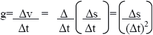

| Objetivo: |
Estudiar la caída libre de un objeto y medir la aceleración de la caída.
|
| |
| Introducción: |
|
Cuando un cuerpo cae libremente sobre la superficie de la tierra, su velocidad instantánea va aumentando. Estudiando la manera en
la cual aumenta esta velocidad se ha encontrado una aceleración constante cuyo valor es de 9.8 m/s2.
El valor varía ligeramente de acuerdo a la latitud y altura de cada lugar.
|
|
|
| Desarrollo Experimental: |
|
Montaje de acuerdo a la ilustración (Figura 1).
Preparación:
- Sujetar el marcador de tiempos sobre el riel de movimientos, se fija un extremo de una cinta de papel metálico de 1 m de largo en la pinza de cocodrilo del marcador de tiempos, y el otro extremo se desliza por dentro de éste hasta que sobresalgan unos 10 cm.
- Se conecta el marcador a la fuente de alimentación. La llave del marcador debe estar en la posición central.
- En el extremo libre de la cinta de papel se sujeta, pegando una etiqueta adhesiva, el porta pesas.
- Se sujeta la cinta de papel y se tensa con la mano. El porta pesas debe encontrarse fuera del borde de la mesa, de manera que pueda caer al suelo al comenzar el experimento.
Experimento 1:
Ponemos la llave del marcador en la posición n 10 ms y al mismo tiempo liberamos la cinta. El porta pesas cae al suelo y
arrastra la cinta a través del marcador. Entonces volvemos a desconectar el marcador (posición central) y quitamos la cinta de su
sujeción.
Sobre la cinta, partiendo de una marca de las primeras, contamos y señalamos tres series de 10 marcas de manera que tengamos
tres caminos recorridos cada uno en una décima de segundo (10x10ms). |
| Resultados y Conclusiones: |
|
Los tres caminos miden:
s 1= _____ mm, s2= _____mm, s3= _____mm
y ¿Cuánto han aumentado los caminos en esas décimas de segundo?
s2 -s1 = _____mm = _____m s3 -s2 = _____mm = _____m
Las distancias deben expresarse en metros.
Para la aceleración g, apelación de la gravedad, es válido:

El aumento de la distancia debe por tanto dividirse entre 0,01 (0,12) o lo que es lo mismo, multiplicarse por 100.
El valor de la aceleración de la gravedad es g = _____m/s2
Con ayuda del marcador de tiempos se puede calcular la aceleración de la gravedad. El valor teórico es: g = 9,81 m/s2
|
|
|
|